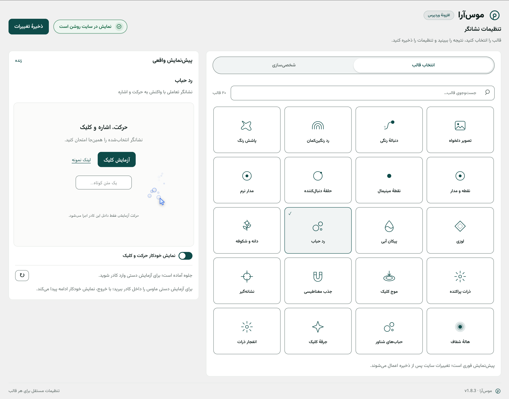

موسآرا
نشانگر پیشفرض ماوس را در سمت بازدیدکننده با ۲۰ قالب آمادهٔ متحرک جایگزین میکند. هر قالب تنظیمات مستقل خودش را دارد و نتیجه پیش از ذخیره، داخل همان صفحهٔ تنظیمات پیشنمایش زنده میشود.
- ۲۰ قالب آمادهٔ نشانگر
- تنظیمات مستقل هر قالب
- تصویر دلخواه بهجای نشانگر
- پیشنمایش زنده داخل تنظیمات
- غیرفعالسازی هوشمند در دستگاه لمسی

گالری تصاویر
روی هر تصویر کلیک کنید؛ در لایتباکس با چرخ ماوس (۲۰٪ تا ۵۰۰٪)، دابلکلیک، pinch لمسی و دکمهها زوم کنید و در زوم بالای ۱۰۰٪ تصویر را بکشید.
ویژگیها
همهٔ موارد زیر از تنظیمات و کد افزونه استخراج شدهاند.
۲۰ قالب آماده
از دنبالهٔ رنگی و رد رنگینکمان تا جذب مغناطیسی و جرقهٔ کلیک؛ با جستوجوی سریع نام قالب.
تنظیمات مستقل هر قالب
رنگ، اندازه و سرعت هر قالب جداگانه ذخیره میشود و با دکمهٔ بازنشانی به حالت قالب برمیگردد.
تصویر دلخواه
لوگو یا آیکون شما از کتابخانهٔ رسانه، با برش دایره یا گوشهگرد و اندازهٔ ۱۶ تا ۱۶۰ پیکسل.
پیشنمایش زنده
حرکت، اشاره و کلیک را داخل کادر پیشنمایش آزمایش کنید؛ حرکت آزمایشی فقط داخل همان کادر اجرا میشود.
پنج خانوادهٔ موتور
نقطه و حلقه، نشانگرهای نرم، انیمیشن سیستمی، هاله و جلوههای حرکتی، و نشانهگیر برداری.
کنترل نمایش
بزرگشدن اختیاری هنگام هاور، پنهانکردن اختیاری نشانگر اصلی، و رعایت اختیاری «کاهش حرکت» دستگاه.
فناوری و عملکرد
- رندر: بسته به قالب، Canvas API یا DOM/SVG؛ افکت پاشش رنگ با WebGL و بودجهٔ تطبیقی رزولوشن برای دستگاههای ضعیفتر.
- بدون لگ در حرکت ماوس: رویدادهای ماوس passive اند و حلقهٔ انیمیشن پس از ایستادن نشانگر آزاد میشود؛ هیچ حلقهٔ دائمی در پسزمینه نمیچرخد.
- توقف هوشمند: در تب غیرفعال، هنگام بستن صفحه و داخل ویرایشگر زندهٔ صفحهسازها همهچیز متوقف میشود.
- دستگاه لمسی: بهصورت پیشفرض در موبایل و تبلت غیرفعال است و نشانگر بومی برمیگردد؛ اجرا روی لمسی یک گزینهٔ اختیاری است.
- بارگذاری شرطی: اسکریپت موتور فقط وقتی دستگاه مجاز باشد دانلود میشود؛ بدون وابستگی به jQuery.
- ایمنی نمایش: اگر بارگذاری افکت با خطا مواجه شود، نشانگر بومی مرورگر بازگردانده میشود و در فیلدهای متنی نشانگر متن حفظ میشود.
سازگاریها
لایهٔ نشانگر مستقل از قالب در فرانتاند اجرا میشود و داخل ویرایشگرها بهصورت خودکار متوقف میگردد.
پرسشهای پرتکرار
آیا افزونه روی سرعت سایت اثر محسوسی میگذارد؟
اسکریپت محافظ سبک همیشه فعال است ولی اسکریپت موتور فقط وقتی دستگاه مجاز باشد دانلود میشود؛ حلقهٔ انیمیشن پس از ایستادن نشانگر آزاد میشود و رویدادهای ماوس passive اند.
در موبایل و تبلت چه اتفاقی میافتد؟
بهصورت پیشفرض افکت روی دستگاه لمسی اجرا نمیشود و نشانگر بومی دستنخورده میماند؛ اگر بخواهید، با گزینهٔ «اجرا در موبایل و دستگاه لمسی» فعال میشود.
با صفحهسازها تداخل دارد؟
خیر؛ داخل ویرایشگر زندهٔ المنتور، دیوی، WPBakery و کاستومایزر بهصورت خودکار متوقف میشود و در فرانتاند مستقل از قالب اجرا میگردد.
میتوانم لوگوی خودم را نشانگر کنم؟
بله؛ قالب «تصویر دلخواه» تصویر کتابخانهٔ رسانه را میپذیرد و برش دایره یا گوشهگرد و اندازهٔ ۱۶ تا ۱۶۰ پیکسل را تنظیم میکنید.
اگر کاربر «کاهش حرکت» را در سیستم عامل فعال کرده باشد چه؟
با روشنکردن گزینهٔ «رعایت تنظیم کاهش حرکت دستگاه»، جلوه برای آن کاربر اجرا نمیشود و نشانگر بومی نمایش داده میشود.